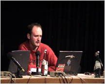
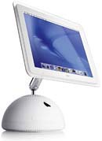

- user -
. You can also submit new sites using the ADD URL submission form. See also the older but more comprehensive list of user groups, which is being superseded slowly as and when site owners supply an update here. If you wish to look at a list of user group newsletters, please visit User Group Newsletters on the Web. UPPER-CASE text is case-sensitive; lower-case matches either case.
 |
. Consult your AACUG Ambassador for the link if you do not know it. ___ The Association of Apple Computer Users is hereto help individuals find a user group to join, or provide the support you need whenthere's no user group in the immediate area. We'll even help you start your own user group in your area. Help channel the association's energy toward the benefits, programs and services your group needs most.
Right now, we are limiting membership to those who belong to FACUG member groups and Officers and Directors of APCUG. . The leading regional association of its kind in the country, FACUG is a southeast regional non-profit tax exempt association of independent computer user groups with 46 member groups, including PC and MAC groups. Founded in 1993 to assist user groups in the performance of their managerial and educational activities, to promote communications among local user groups, and to facilitate relations between user groups and the computer industry. FACUG is the successor organization to the Florida Suncoast Conference of PC User Groups.
|  |
''The technologists get far into the design of a system without really understanding who the target users are, the work that they do, and the context in which they do that work,'' Karat says. By the time feedback comes in, it's ''way too late. If there is a problem with the use of the system, the system is the problem, not the user. The user has the right to easily install software and hardware systems. The user has the right to a system that performs exactly as promised.
|  |
also look at: http://www.sitec.fr/users/akenatondocks/
.